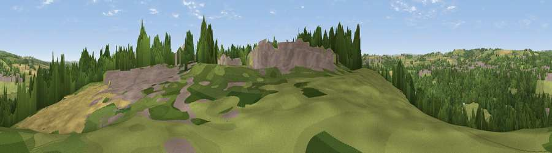

Viewpoint near Byers Green
#28280 in England · top 64% of its area beats it · near Byers GreenWhere it is
The exact computed spot (NZ 21025 34025). Click the marker for map links.
The view, rendered

A 360° render of this exact spot computed from the terrain model, tree cover and land cover — summer colours, afternoon light, calibrated against photographs of famous viewpoints. Real trees, hedges and buildings will differ in detail.
The panorama
Grey silhouette: terrain skyline in each direction (720 bearings, Earth curvature and refraction included). Dashed green: skyline with trees (+15 m) and buildings (+8 m) as obstacles. Blue strip: how far the ground is visible on each bearing.
Where the view opens
Wedge length = distance to the farthest visible ground on that bearing (vegetation-aware). Rings at 10, 25 and 50 km.
What fills the view
38% grassland · 32% woodland · 16% built-up · 12% cropland ·
Angular shares of the visible panorama (visual magnitude), not map area. Landscape diversity 0.59 (0–1 Shannon).
Key numbers
More beautiful places nearby
The staircase of upgrades: each row has a higher view potential than everything closer. Driving times are estimates from straight-line distance, calibrated against real road routing — check an actual route before setting out.
| Place | Direction | Drive | Score |
|---|---|---|---|
| Viewpoint near Byers Green | SE · 2 km | ~5 min | 59.2 |
| Viewpoint near Crook | WNW · 4 km | ~9 min | 69.4 |
| Viewpoint near Billy Row | WNW · 4 km | ~10 min | 70.3 |
| Viewpoint near Quarrington Hill | ENE · 13 km | ~23 min | 73.1 |
| Pontop Pike | NNW · 20 km | ~34 min | 77.8 |
| Viewpoint near Newton Under Roseberry | ESE · 38 km | ~56 min | 78.3 |
| Viewpoint near Lazenby | ESE · 39 km | ~58 min | 82.1 |
| Viewpoint near Lazenby | ESE · 39 km | ~58 min | 86.4 |
54.70082, -1.67527 · source: screening · position refined by local search. Computed location — check access rights before visiting.